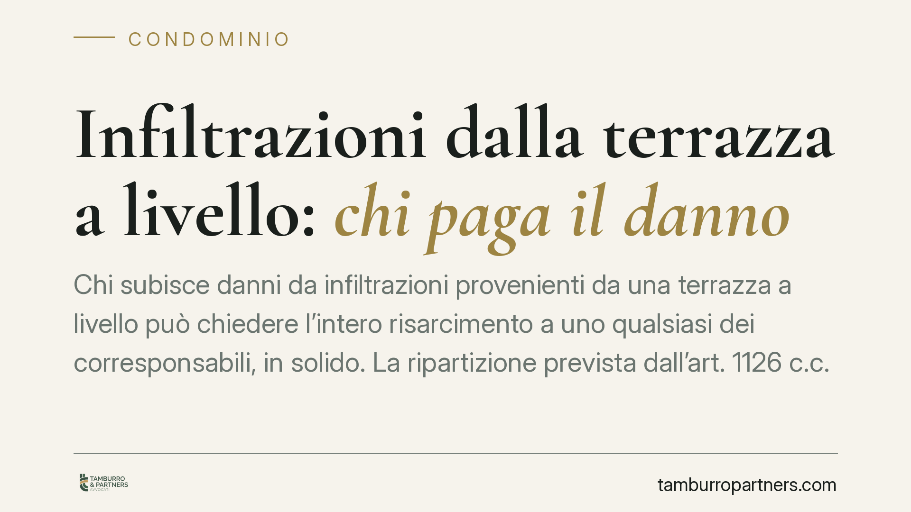

Infiltrazioni dalla terrazza a livello: chi paga il danno
Chi subisce danni da infiltrazioni provenienti da una terrazza a livello può chiedere l'intero risarcimento a uno qualsiasi dei corresponsabili, in solido. La ripartizione prevista dall'art. 1126 c.c. non limita la pretesa del danneggiato: rileva solo nei rapporti interni e nelle azioni di regresso tra chi ha pagato e gli altri obbligati. Una distinzione che cambia la strategia processuale.

Il caso e la questione
Le infiltrazioni dalla terrazza a livello sono tra le liti condominiali più frequenti. La terrazza a livello ha una doppia natura: serve da copertura per gli appartamenti sottostanti, come un lastrico solare, ma funge anche da terrazzo privato per chi la utilizza in via esclusiva.
Questa duplice funzione genera un problema ricorrente: quando l'acqua filtra e danneggia l'immobile sottostante, chi è tenuto a pagare? Il proprietario che ne ha l'uso esclusivo, il condominio, o entrambi?
L'orientamento consolidato distingue nettamente due piani. Verso il danneggiato vale la regola della solidarietà. Tra i corresponsabili, invece, vale il criterio di ripartizione interna. Confondere i due piani porta a impostare male la domanda risarcitoria.
Inquadramento normativo
La terrazza a livello è stata qualificata dalle Sezioni Unite (Cass. SU n. 3672/1997) come bene a servizio promiscuo: svolge la funzione di copertura del fabbricato e, insieme, quella di superficie fruibile dal titolare dell'uso esclusivo.
Da qui derivano due regimi di responsabilità. L'art. 2051 c.c. imputa il danno al custode: la custodia è esclusiva per chi utilizza la terrazza (strato superficiale, pavimentazione, manutenzione d'uso) e condominiale per gli elementi strutturali che svolgono funzione di copertura (guaina impermeabilizzante, massetto). La giurisprudenza riconosce dunque una responsabilità concorrente.
L'art. 2055 c.c. stabilisce che, quando il fatto dannoso è imputabile a più persone, tutte rispondono in solido: il danneggiato può pretendere l'intero da ciascuna. Solo in un secondo momento, nei rapporti interni, la ripartizione segue l'art. 1126 c.c., che per il lastrico solare (e per analogia per la terrazza a livello) addossa un terzo delle spese a chi ne ha l'uso esclusivo e due terzi ai proprietari dei piani sottostanti coperti.
Il punto decisivo: la ripartizione 1/3-2/3 non opera verso la vittima. Opera solo quando chi ha pagato agisce in regresso contro gli altri corresponsabili (orientamento confermato, tra le altre, da Cass. n. 2821/2017).
Il ruolo di locatore e inquilino
Se la terrazza fa parte di un immobile locato, la responsabilità va distinta anche sul versante contrattuale. Gli artt. 1576 e 1609 c.c. ripartiscono gli oneri di manutenzione: al conduttore spettano le piccole riparazioni dovute all'uso, al locatore la manutenzione straordinaria.
In concreto: l'intasamento di uno scarico per cattivo utilizzo tende a gravare sull'inquilino; il deterioramento della guaina impermeabilizzante, intervento strutturale, resta a carico del proprietario-locatore. Verso il danneggiato, tuttavia, la solidarietà non muta: potrà agire contro chi ritiene più solvibile, salvo poi il regresso.
Implicazioni pratiche
Per chi subisce il danno, la regola della solidarietà è un vantaggio concreto: consente di concentrare l'azione su un solo soggetto, tipicamente il condominio o il proprietario con uso esclusivo, senza doversi preoccupare della ripartizione interna.
Per il soggetto convenuto, al contrario, è un rischio: può essere condannato a pagare l'intero, pur avendo una responsabilità solo parziale. Il recupero della quota eccedente avverrà in un secondo giudizio di regresso, con tempi e costi autonomi.
Va ricordato infine il termine di prescrizione: l'azione di risarcimento da fatto illecito si prescrive in cinque anni (art. 2947 c.c.) dal momento in cui il danno si è manifestato. Nelle infiltrazioni, spesso progressive, l'individuazione del dies a quo è delicata e va documentata.
Cosa fare in concreto
- Documenta subito il danno. Fotografa infiltrazioni e aloni, raccogli le date di comparsa e conserva eventuali comunicazioni all'amministratore.
- Richiedi una perizia tecnica. Un tecnico deve individuare l'origine precisa (guaina, scarico, pavimentazione) per distinguere responsabilità condominiale ed esclusiva.
- Invia diffida scritta ai soggetti potenzialmente responsabili, interrompendo la prescrizione quinquennale e fissando un termine per l'intervento.
- Valuta l'azione in solido. È opportuno individuare il corresponsabile più solvibile e impostare la domanda sull'intero, riservando a parte il tema del riparto interno.
- Conserva le prove per l'eventuale regresso, se sei tu a essere chiamato a pagare l'intero.
Contributo informativo a cura di Tamburro & Partners Avvocati – Avv. Giuseppe Tamburro. Non costituisce parere legale.
Ogni condominio ha una storia a sé.
Se gestisci un'amministrazione e vuoi un confronto su una specifica questione condominiale, scrivi allo studio. Ti rispondiamo entro un giorno lavorativo.